a04_Vignette_Concurrent_Validity.RmdHere we are using the polycor R package to compute the correlations. The COA34 functions are just wrappers for that R package functions that prepare the output. I think the scatter plot of the correlations was well-received, worth including that.
set.seed(12162021)
sim.out <- COA34::sim_pro_dat_v2(N=1000,
number.timepoints = 3,
Beta.PRO = NULL,
number.of.anchor.groups = 5,
polychor.value = 0.7,
corr = 'ar1',
cor.value = 0.8,
#var.values = c(7.136))
var.values = c(2))
dat <- sim.out$dat
# Simulate IRT items
# use the scores generated as the theta in the IRT model
sim.out2 <- COA34::sim_irt_item(dat = dat, J = 5, K = 4, latent.variable = 'Y_comp')
str(sim.out2)
#> List of 3
#> $ dat :'data.frame': 3000 obs. of 22 variables:
#> ..$ USUBJID : chr [1:3000] "Subject_0001" "Subject_0001" "Subject_0001" "Subject_0002" ...
#> ..$ Time : Factor w/ 3 levels "Time_1","Time_2",..: 1 2 3 1 2 3 1 2 3 1 ...
#> ..$ PGIS : num [1:3000] 3 4 3 0 0 0 0 0 1 1 ...
#> ..$ PGIS_bl : num [1:3000] 3 3 3 0 0 0 0 0 0 1 ...
#> ..$ PGIS_delta: num [1:3000] 0 1 0 0 0 0 0 0 1 0 ...
#> ..$ ag : num [1:3000] 0 1 0 0 0 0 0 0 1 0 ...
#> ..$ XB : num [1:3000] 4 4.25 4 1 1 1 1 1 2 2 ...
#> ..$ error : num [1:3000] -0.336 -0.509 0.122 0.825 1.212 ...
#> ..$ Y_comp : num [1:3000] 3.66 3.74 4.12 1.82 2.21 ...
#> ..$ Val_1 : int [1:3000] 2 NA NA 0 NA NA 0 NA NA 0 ...
#> ..$ Val_2 : num [1:3000] 6.38 NA NA 3.87 NA ...
#> ..$ Val_3 : num [1:3000] 3.73 NA NA 4.57 NA ...
#> ..$ Val_4 : num [1:3000] 0.555 NA NA 1.558 NA ...
#> ..$ Val_5 : int [1:3000] 4 NA NA 4 NA NA 0 NA NA 2 ...
#> ..$ Y_mcar : num [1:3000] 3.66 3.74 NA 1.82 2.21 ...
#> ..$ Y_mar : num [1:3000] 3.66 3.74 NA 1.82 2.21 ...
#> ..$ Y_mnar : num [1:3000] 3.66 3.74 NA 1.82 2.21 ...
#> ..$ Item_1 : int [1:3000] 2 2 2 1 1 1 0 1 0 1 ...
#> ..$ Item_2 : int [1:3000] 3 1 3 0 2 3 0 0 0 0 ...
#> ..$ Item_3 : int [1:3000] 2 2 2 1 1 3 0 0 0 0 ...
#> ..$ Item_4 : int [1:3000] 3 3 1 0 0 2 2 0 1 0 ...
#> ..$ Item_5 : int [1:3000] 2 2 2 1 0 1 0 0 1 1 ...
#> $ item.param : num [1:5, 1:4] 2 2 2 2 2 -2 -2 -2 -2 -2 ...
#> ..- attr(*, "dimnames")=List of 2
#> .. ..$ : chr [1:5] "Item_1" "Item_2" "Item_3" "Item_4" ...
#> .. ..$ : chr [1:4] "slope" "intercept_1" "intercept_2" "intercept_3"
#> $ item.responses:'data.frame': 3000 obs. of 5 variables:
#> ..$ Item_1: int [1:3000] 2 2 2 1 1 1 0 1 0 1 ...
#> ..$ Item_2: int [1:3000] 3 1 3 0 2 3 0 0 0 0 ...
#> ..$ Item_3: int [1:3000] 2 2 2 1 1 3 0 0 0 0 ...
#> ..$ Item_4: int [1:3000] 3 3 1 0 0 2 2 0 1 0 ...
#> ..$ Item_5: int [1:3000] 2 2 2 1 0 1 0 0 1 1 ...
dat <- sim.out2$dat
# Score the PRO - just take a simple sum score here:
dat$PRO.score <- apply(dat[, grep('Item', colnames(dat))], 1, sum)
# Create the same PRO score, but with MAR drop-out:
dat$PRO.score_mar <- dat$PRO.score
dat$PRO.score_mar[is.na(dat$Y_mar)] <- NA
# Note that you've just set the PRO score to missing wherever the Y_mar variable is missing
# Now for the other missing types:
dat$PRO.score_mcar <- dat$PRO.score_mnar <- dat$PRO.score
dat$PRO.score_mcar[is.na(dat$Y_mcar)] <- NA
dat$PRO.score_mnar[is.na(dat$Y_mnar)] <- NA
aggregate(cbind(PRO.score, PRO.score_mcar, PRO.score_mar, PRO.score_mnar) ~ Time,
function(x) mean(x, na.rm = T),
data = dat,
na.action = na.pass)
#> Time PRO.score PRO.score_mcar PRO.score_mar PRO.score_mnar
#> 1 Time_1 7.445 7.445000 7.445 7.445
#> 2 Time_2 7.492 7.486667 5.912 5.748
#> 3 Time_3 7.520 7.736000 5.210 4.204I can’t overemphasize how important it is to keep an eye on your variables. The functions will do all the work, you just have to carefully manage your data.
str(dat)
#> 'data.frame': 3000 obs. of 26 variables:
#> $ USUBJID : chr "Subject_0001" "Subject_0001" "Subject_0001" "Subject_0002" ...
#> $ Time : Factor w/ 3 levels "Time_1","Time_2",..: 1 2 3 1 2 3 1 2 3 1 ...
#> $ PGIS : num 3 4 3 0 0 0 0 0 1 1 ...
#> $ PGIS_bl : num 3 3 3 0 0 0 0 0 0 1 ...
#> $ PGIS_delta : num 0 1 0 0 0 0 0 0 1 0 ...
#> $ ag : num 0 1 0 0 0 0 0 0 1 0 ...
#> $ XB : num 4 4.25 4 1 1 1 1 1 2 2 ...
#> $ error : num -0.336 -0.509 0.122 0.825 1.212 ...
#> $ Y_comp : num 3.66 3.74 4.12 1.82 2.21 ...
#> $ Val_1 : int 2 NA NA 0 NA NA 0 NA NA 0 ...
#> $ Val_2 : num 6.38 NA NA 3.87 NA ...
#> $ Val_3 : num 3.73 NA NA 4.57 NA ...
#> $ Val_4 : num 0.555 NA NA 1.558 NA ...
#> $ Val_5 : int 4 NA NA 4 NA NA 0 NA NA 2 ...
#> $ Y_mcar : num 3.66 3.74 NA 1.82 2.21 ...
#> $ Y_mar : num 3.66 3.74 NA 1.82 2.21 ...
#> $ Y_mnar : num 3.66 3.74 NA 1.82 2.21 ...
#> $ Item_1 : int 2 2 2 1 1 1 0 1 0 1 ...
#> $ Item_2 : int 3 1 3 0 2 3 0 0 0 0 ...
#> $ Item_3 : int 2 2 2 1 1 3 0 0 0 0 ...
#> $ Item_4 : int 3 3 1 0 0 2 2 0 1 0 ...
#> $ Item_5 : int 2 2 2 1 0 1 0 0 1 1 ...
#> $ PRO.score : int 12 10 10 3 4 10 2 1 2 2 ...
#> $ PRO.score_mar : int 12 10 NA 3 4 10 2 1 2 2 ...
#> $ PRO.score_mnar: int 12 10 NA 3 4 10 2 1 2 2 ...
#> $ PRO.score_mcar: int 12 10 NA 3 4 10 2 1 NA 2 ...
# PGIS is ordinal; transform it for the purposes of correct correlation
# Leave it numeric to compute the PGIS_delta for the change scores later
dat.cor <- dat
dat.cor$PGIS <-
factor(dat.cor$PGIS,
levels = c(0, 1, 2, 3, 4),
labels = c('None', 'Mild', 'Moderate', 'Severe', 'Very Severe'))
table(dat.cor$PGIS, useNA = 'always')
#>
#> None Mild Moderate Severe Very Severe <NA>
#> 683 604 621 526 566 0
xtabs(~ dat.cor$PGIS + dat$PGIS)
#> dat$PGIS
#> dat.cor$PGIS 0 1 2 3 4
#> None 683 0 0 0 0
#> Mild 0 604 0 0 0
#> Moderate 0 0 621 0 0
#> Severe 0 0 0 526 0
#> Very Severe 0 0 0 0 566
# Validator Variables 1 and 5 are supposed to be
# ordered categorical variables
dat.cor$Val_1 <- factor(dat.cor$Val_1)
table(dat.cor$Val_1, useNA = 'always')
#>
#> 0 1 2 <NA>
#> 334 333 333 2000
# only collected at baseline, hence the NAs
dat.cor$Val_5 <- factor(dat.cor$Val_5)
table(dat.cor$Val_5, useNA = 'always')
#>
#> 0 1 2 3 4 <NA>
#> 200 200 200 200 200 2000
# Only collected at baseline, hence the NAs
# Check data:
str(dat.cor)
#> 'data.frame': 3000 obs. of 26 variables:
#> $ USUBJID : chr "Subject_0001" "Subject_0001" "Subject_0001" "Subject_0002" ...
#> $ Time : Factor w/ 3 levels "Time_1","Time_2",..: 1 2 3 1 2 3 1 2 3 1 ...
#> $ PGIS : Factor w/ 5 levels "None","Mild",..: 4 5 4 1 1 1 1 1 2 2 ...
#> $ PGIS_bl : num 3 3 3 0 0 0 0 0 0 1 ...
#> $ PGIS_delta : num 0 1 0 0 0 0 0 0 1 0 ...
#> $ ag : num 0 1 0 0 0 0 0 0 1 0 ...
#> $ XB : num 4 4.25 4 1 1 1 1 1 2 2 ...
#> $ error : num -0.336 -0.509 0.122 0.825 1.212 ...
#> $ Y_comp : num 3.66 3.74 4.12 1.82 2.21 ...
#> $ Val_1 : Factor w/ 3 levels "0","1","2": 3 NA NA 1 NA NA 1 NA NA 1 ...
#> $ Val_2 : num 6.38 NA NA 3.87 NA ...
#> $ Val_3 : num 3.73 NA NA 4.57 NA ...
#> $ Val_4 : num 0.555 NA NA 1.558 NA ...
#> $ Val_5 : Factor w/ 5 levels "0","1","2","3",..: 5 NA NA 5 NA NA 1 NA NA 3 ...
#> $ Y_mcar : num 3.66 3.74 NA 1.82 2.21 ...
#> $ Y_mar : num 3.66 3.74 NA 1.82 2.21 ...
#> $ Y_mnar : num 3.66 3.74 NA 1.82 2.21 ...
#> $ Item_1 : int 2 2 2 1 1 1 0 1 0 1 ...
#> $ Item_2 : int 3 1 3 0 2 3 0 0 0 0 ...
#> $ Item_3 : int 2 2 2 1 1 3 0 0 0 0 ...
#> $ Item_4 : int 3 3 1 0 0 2 2 0 1 0 ...
#> $ Item_5 : int 2 2 2 1 0 1 0 0 1 1 ...
#> $ PRO.score : int 12 10 10 3 4 10 2 1 2 2 ...
#> $ PRO.score_mar : int 12 10 NA 3 4 10 2 1 2 2 ...
#> $ PRO.score_mnar: int 12 10 NA 3 4 10 2 1 2 2 ...
#> $ PRO.score_mcar: int 12 10 NA 3 4 10 2 1 NA 2 ...
# 5 validator variables (Val_1, Val_2...Val_5)
# 4 PRO scoresUse the function to create a large table of the correlations you need.
Note that the correlations are computed using baseline data, with no missingness. Thus, all of the different types of drop-out will have the exact same values. This table is, of course, just to illustrate the functionality.
If this isn’t exactly what you’re looking for, try the hetcor() function in the polycor R package.
out <- COA34::compute_validity(dat = dat.cor,
time.var = 'Time',
PRO.score = c('PRO.score',
'PRO.score_mcar',
'PRO.score_mar',
'PRO.score_mnar'),
val.var = c('PGIS', paste0('Val_', 1:5))
)
# Compare output to generating values:
sim.out$out.val$cor.mat.ref
#> Score Val_1 Val_2 Val_3 Val_4 Val_5
#> Score 1.0 0.50 0.60 0.80 0.20 0.30
#> Val_1 0.5 1.00 0.30 0.40 0.10 0.15
#> Val_2 0.6 0.30 1.00 0.48 0.12 0.18
#> Val_3 0.8 0.40 0.48 1.00 0.16 0.24
#> Val_4 0.2 0.10 0.12 0.16 1.00 0.06
#> Val_5 0.3 0.15 0.18 0.24 0.06 1.00
library(R2Word)
R2Word::dump_df_mat_to_file(out = out,
decimals = c(0, 2),
table.title = 'Correlations - Vignette Illustration',
table.footnote = '**All data simulated',
file.name = 'val_vig_t1',
print.dir = print.dir)Correlations - Vignette Illustration | ||||
PRO Score |
Validator Variable |
Correlation Type |
Sample Size |
Correlation |
PRO.score |
PGIS |
polyserial |
1000 |
0.81 |
PRO.score |
Val_1 |
polyserial |
1000 |
0.52 |
PRO.score |
Val_2 |
Pearson |
1000 |
0.55 |
PRO.score |
Val_3 |
Pearson |
1000 |
0.73 |
PRO.score |
Val_4 |
Pearson |
1000 |
0.19 |
PRO.score |
Val_5 |
polyserial |
1000 |
0.30 |
PRO.score_mcar |
PGIS |
polyserial |
1000 |
0.81 |
PRO.score_mcar |
Val_1 |
polyserial |
1000 |
0.52 |
PRO.score_mcar |
Val_2 |
Pearson |
1000 |
0.55 |
PRO.score_mcar |
Val_3 |
Pearson |
1000 |
0.73 |
PRO.score_mcar |
Val_4 |
Pearson |
1000 |
0.19 |
PRO.score_mcar |
Val_5 |
polyserial |
1000 |
0.30 |
PRO.score_mar |
PGIS |
polyserial |
1000 |
0.81 |
PRO.score_mar |
Val_1 |
polyserial |
1000 |
0.52 |
PRO.score_mar |
Val_2 |
Pearson |
1000 |
0.55 |
PRO.score_mar |
Val_3 |
Pearson |
1000 |
0.73 |
PRO.score_mar |
Val_4 |
Pearson |
1000 |
0.19 |
PRO.score_mar |
Val_5 |
polyserial |
1000 |
0.30 |
PRO.score_mnar |
PGIS |
polyserial |
1000 |
0.81 |
PRO.score_mnar |
Val_1 |
polyserial |
1000 |
0.52 |
PRO.score_mnar |
Val_2 |
Pearson |
1000 |
0.55 |
PRO.score_mnar |
Val_3 |
Pearson |
1000 |
0.73 |
PRO.score_mnar |
Val_4 |
Pearson |
1000 |
0.19 |
PRO.score_mnar |
Val_5 |
polyserial |
1000 |
0.30 |
**All data simulated | ||||
Let’s compute for a single score and create a scatterplot. This visualization has been well-received, make use of it.
out1 <- COA34::compute_validity(dat = dat.cor,
time.var = 'Time',
PRO.score = 'PRO.score',
val.var = c('PGIS', paste0('Val_', 1:5))
)We have the output values, let’s make the scatterplot:
# Scatterplot of Correlations:
library(ggplot2)
p1 <- ggplot(out1, aes(x = `Validator Variable`, y = Correlation)) +
geom_point() +
theme_minimal() +
theme(axis.text.x=element_blank()) +
scale_y_continuous(lim = c(0,1), breaks = seq(0, 1, by = 0.1))
library(ggrepel)
p2 <- p1 + ggrepel::geom_text_repel(aes(label = `Validator Variable`),
size = 3.5)
p2
# How to customize the labels
out1$label <-
ifelse(out1$`Validator Variable` == 'PGIS', 'PGIS anchor',
ifelse(out1$`Validator Variable` == 'Val_1', 'PGIC',
ifelse(out1$`Validator Variable` == 'Val_2', 'SF-36',
ifelse(out1$`Validator Variable` == 'Val_3', 'EQ-5D',
ifelse(out1$`Validator Variable` == 'Val_4', 'NSCLC-SAQ',
ifelse(out1$`Validator Variable` == 'Val_5', 'SF-36, Physical Functioning',
NA))))))
library(ggrepel)
p3 <- p1 + ggrepel::geom_text_repel(data = out1, aes(label = `label`),
size = 3.5)
p3
The compute_validity() function will automatically select the baseline timepoint. If you want to use a different timepoint, you’ll have to pass a dataframe with only that data! Quick example:
out2 <- COA34::compute_validity(dat = dat.cor[dat.cor$Time == 'Time_3', ],
time.var = 'Time',
PRO.score = c('PRO.score',
'PRO.score_mcar',
'PRO.score_mar',
'PRO.score_mnar'),
val.var = c('PGIS'))
out2
#> PRO Score Validator Variable Correlation Type Sample Size Correlation
#> 1 PRO.score PGIS polyserial 1000 0.6555130
#> 2 PRO.score_mcar PGIS polyserial 500 0.6473966
#> 3 PRO.score_mar PGIS polyserial 500 0.5888753
#> 4 PRO.score_mnar PGIS polyserial 500 0.3349494